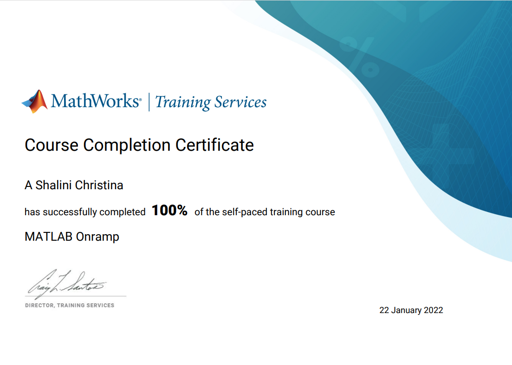
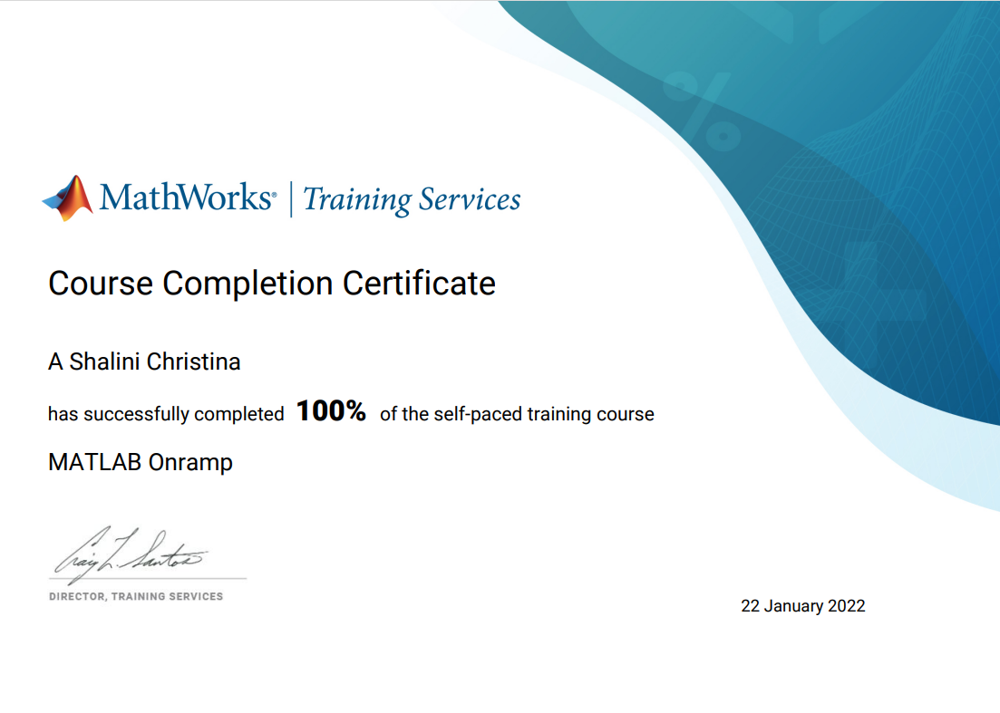

Portfolio
Projects
Connect
Worked in Front End with HTML,CSS
Team Size: 6
A website where school students,special children(through speech) can ask their doubts in native language and gets cleared instantly with the help of teachers.Teachers can post materials,start live classes to can gain money.
Survey Lancer
Worked in Front End with HTML,CSS
Team Size: 3
A website where surveyscan be made interactive.It is a voice based survey website,where survey questions will be available in different languages.The respondees can also give their input in voice in different language.This will majorly increase the accuracy of responses.
Info Diffusion
Worked with python
Team Size:2
This is a python project to find the information diffusion in Twitter network ,With different models like SIS,SI,SIR and also using centrality measures like Degree,Betweeness,Eigen,Closeness.
Certificates
 


Co-Curricular Activities
| S.No | Activities |
|---|---|
| 1 | TCE-IT Coders Club Co-ordinator |
| 2 | TCE ACM Student Chapter member |
| 3 | Volunteered in NSS |
| 4 | Organised Tech talk event for juniors |
| 5 | Organised Web Design Contest for juniors |
| 6 | Participated in Storage Wars Event conducted by IOT club |
| 7 | Participated in CSTAR Event conducted by CSE Dept |
| 8 | Participated in Web Design Contest Conducted by TCE IT coders club |
| 9 | Participated in Madurai hackathon selection competition |
| 10 | Completed Android Development program conducted by TCE MOOC |
| 11 | Currently working on my research paper "Information Diffusion in Social |
| 12 | Participated in a 36 hours hackathon conducted by Survey Sparrow |